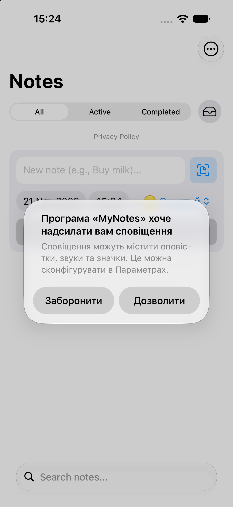
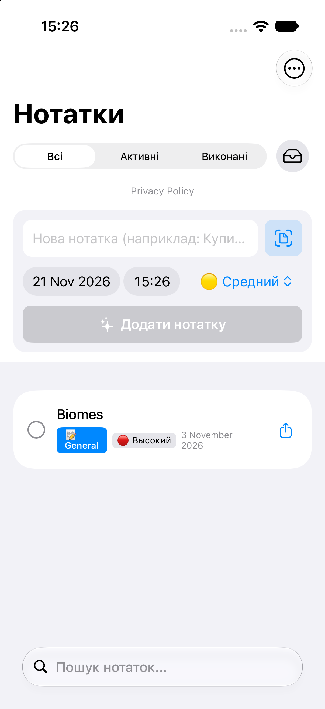
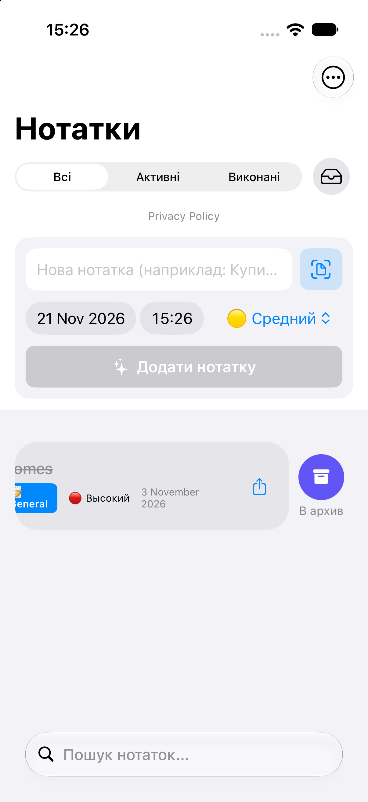
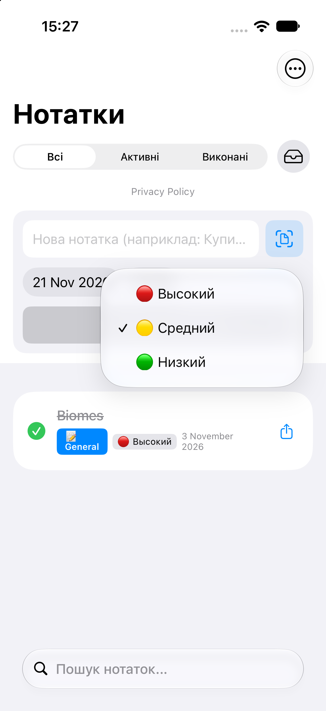
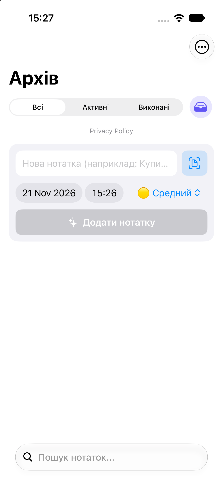
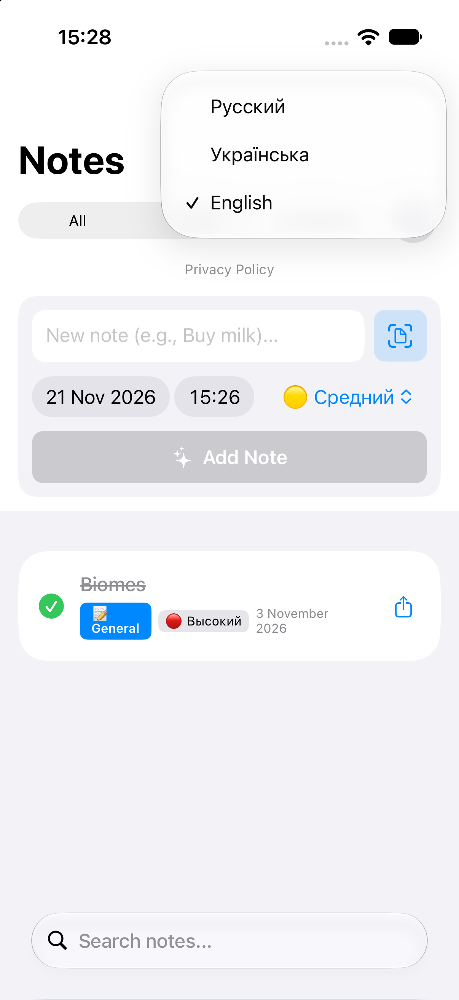
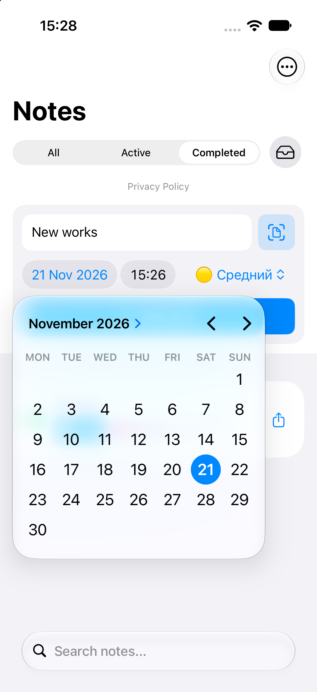
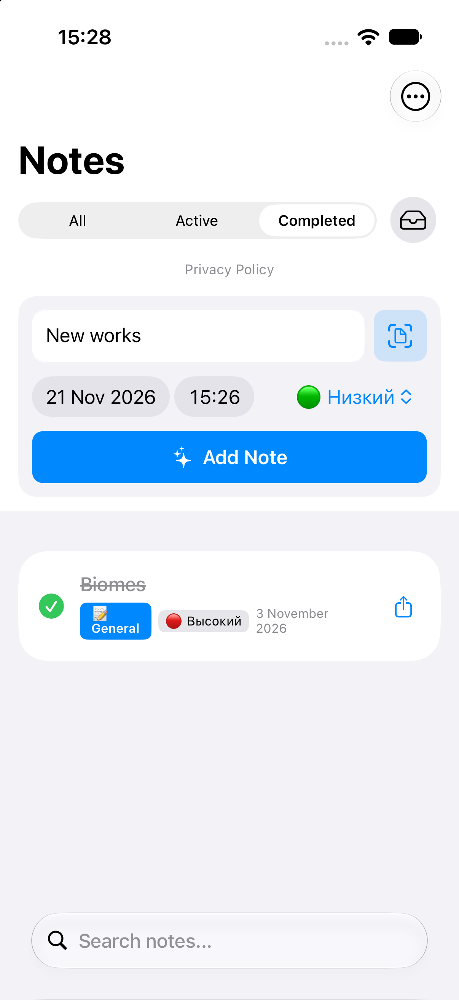
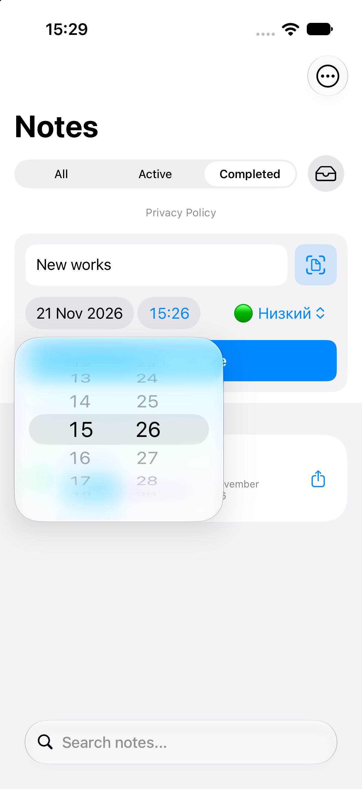
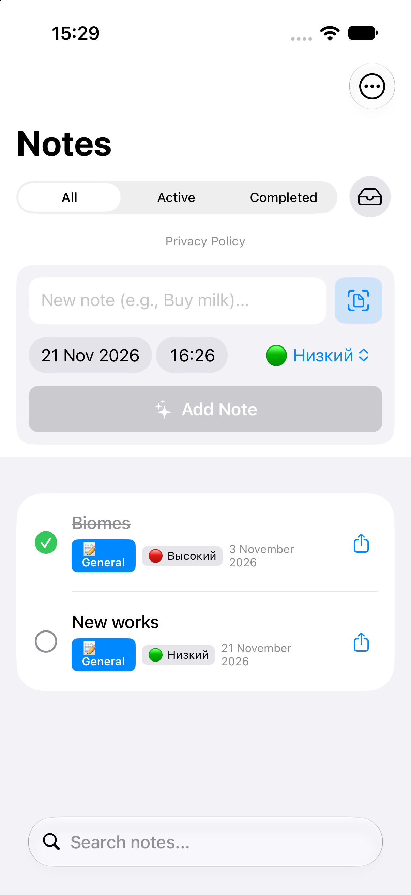

Personal notes and task organizer with due dates and times, priority levels, categories/tags, search, archive management, document scanning via camera, and multi-language interface support (English, Ukrainian, Russian).










Need help, have questions, or found a bug? Contact support at: abmixdj@gmail.com
Last updated: November 2026
MyNotes respects your privacy. Your notes, dates, priorities, archive items, and scanned documents remain on your device and are not sold or transferred to third parties.